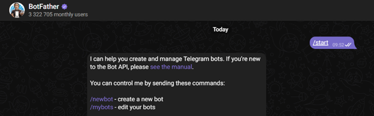
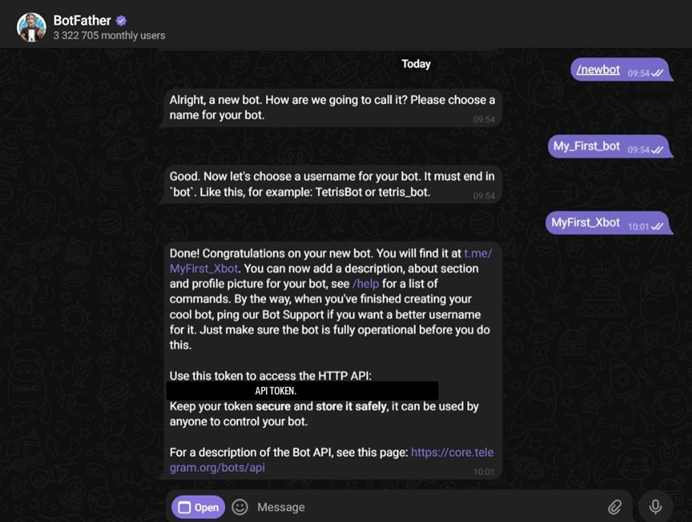

Создание телеграм бота и связка с ИИ
Телеграм бот это прикольно. Можно использовать как часть робототехнического проекта или как отдельный проект.
Создание бота
- Заходим в Telegram- бота @BotFather.

- Затем нажимаем «start» и из предложенного списка выбираем команду /newbot.

- Вводим имя и ник вашего Telegram-бота. Ник должен оканчиваться на _bot

Нужно сохранить API TOKEN для дальнейшего использования. Никому не передавайте API TOKEN!
Код для бота
- Установить билиотеку aiogram (библиотека для создания Telegram-ботов на языке программирования Python):
pip install aiogram
Документация aiogram.
- запустить тестовый код:
import asyncio
from aiogram import Bot, Dispatcher, F, Router
from aiogram.types import Message
from aiogram.filters import CommandStart
API_TOKEN = "YOUR_BOT_TOKEN_HERE" # вставь свой токен
router = Router()
@router.message(CommandStart())
async def on_start(message: Message):
await message.answer("Привет! 👋 Напиши 'салам' или используй команды.")
@router.message(F.text, F.text.lower() == "салам")
async def reply(message: Message):
await message.answer("Уалейкум! 👋")
async def main():
bot = Bot(token=API_TOKEN)
dp = Dispatcher()
dp.include_router(router)
await dp.start_polling(bot)
if __name__ == "__main__":
asyncio.run(main())
Пример игры.
Крестики нолики
import asyncio, random
from aiogram import Bot, Dispatcher, F, Router
from aiogram.filters import CommandStart
from aiogram.types import Message, CallbackQuery
from aiogram.utils.keyboard import InlineKeyboardBuilder
API_TOKEN = "YOUR_BOT_TOKEN_HERE"
router = Router()
GAMES: dict[int, list[str]] = {}
WIN = [(0,1,2),(3,4,5),(6,7,8),(0,3,6),(1,4,7),(2,5,8),(0,4,8),(2,4,6)]
def new_board(): return [' '] * 9
def avail(b): return [i for i,v in enumerate(b) if v == ' ']
def winner(b):
for a,b1,c in WIN:
line = [b[a], b[b1], b[c]]
if line[0] != ' ' and len(set(line)) == 1:
return line[0]
return "draw" if not avail(b) else None
def would_win(b, s, i):
t = b.copy(); t[i] = s
return winner(t) == s
def bot_move(b):
for i in avail(b):
if would_win(b, 'O', i): return i
for i in avail(b):
if would_win(b, 'X', i): return i
if 4 in avail(b): return 4
for i in [0,2,6,8]:
if i in avail(b): return i
return random.choice(avail(b))
def board_kb(b, finished=False):
kb = InlineKeyboardBuilder()
sym = lambda v: '❌' if v == 'X' else ('⭕' if v == 'O' else '·')
for i in range(9):
text = sym(b[i])
cb = "ttt:noop" if finished or b[i] != ' ' else f"ttt:{i}"
kb.button(text=text, callback_data=cb)
kb.adjust(3,3,3)
return kb.as_markup()
def status_text(b):
w = winner(b)
if w == 'X': return "Ты выиграл. ✅"
if w == 'O': return "Бот выиграл. ❌"
if w == "draw": return "Ничья. ⏸"
return "Твой ход: ❌"
@router.message(CommandStart())
async def start(m: Message):
GAMES[m.chat.id] = new_board()
await m.answer("Крестики-нолики. Ты играешь ❌.",
reply_markup=board_kb(GAMES[m.chat.id]))
@router.callback_query(F.data == "ttt:noop")
async def noop(c: CallbackQuery):
await c.answer()
@router.callback_query(F.data.startswith("ttt:"))
async def play(c: CallbackQuery):
chat_id = c.message.chat.id
data = c.data.split(":")[1]
b = GAMES.get(chat_id) or new_board()
if data == "noop" or winner(b):
await c.answer()
return
i = int(data)
if b[i] != ' ':
await c.answer()
return
b[i] = 'X'
w = winner(b)
if not w:
j = bot_move(b)
b[j] = 'O'
w = winner(b)
finished = w is not None
await c.message.edit_text(status_text(b), reply_markup=board_kb(b, finished=finished))
await c.answer()
if finished:
nb = new_board()
GAMES[chat_id] = nb
await c.message.answer("Новая игра. Твой ход: ❌", reply_markup=board_kb(nb))
async def main():
bot = Bot(API_TOKEN)
dp = Dispatcher()
dp.include_router(router)
await dp.start_polling(bot)
if __name__ == "__main__":
asyncio.run(main())
YOLO + bot.
Пример с YOLO
import asyncio, io
import numpy as np
import cv2
import torch
from ultralytics import YOLO
from aiogram import Bot, Dispatcher, F, Router
from aiogram.filters import CommandStart
from aiogram.types import Message, BufferedInputFile
API_TOKEN = "YOUR_BOT_TOKEN_HERE"
router = Router()
@router.message(CommandStart())
async def start(m: Message):
await m.answer("Отправь фото и YOLO её обработает")
@router.message(F.photo)
async def on_photo(m: Message, bot: Bot):
buf = io.BytesIO()
await bot.download(m.photo[-1], destination=buf)
img = cv2.imdecode(np.frombuffer(buf.getvalue(), np.uint8), cv2.IMREAD_COLOR)
plotted = await asyncio.to_thread(
lambda: model(img, conf=0.5, imgsz=640, verbose=False)[0].plot()
)
ok, enc = cv2.imencode(".jpg", plotted)
if not ok:
await m.answer("Encoding error")
return
await m.answer_photo(BufferedInputFile(enc.tobytes(), filename="pose.jpg"))
async def main():
global model
model = YOLO("yolo11m-pose.pt")
if torch.cuda.is_available():
model.to("cuda")
bot = Bot(API_TOKEN)
dp = Dispatcher()
dp.include_router(router)
await dp.start_polling(bot)
if __name__ == "__main__":
asyncio.run(main())